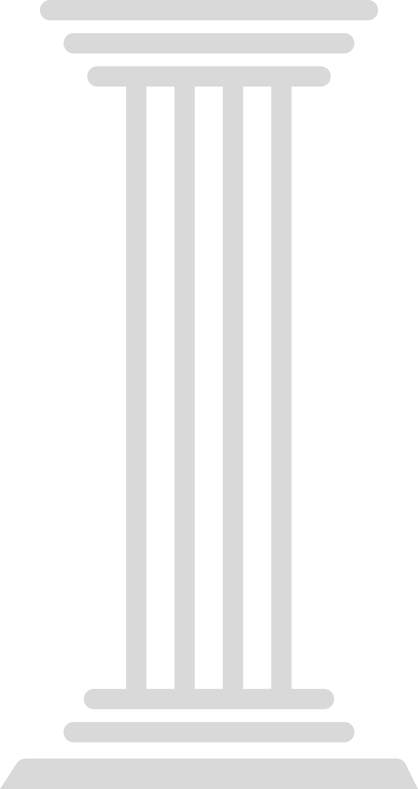

ECMAScript 6
Paradigma de Orientação a Objetos (OO)
Paradigma - Forma, padrão, ou método de se fazer algo.
class Calculadora {
constructor() {
this.a = 10;
this.b = 7;
this.operador = 'mult';
}
calcular() {
if (this.operador === 'mult') {
console.log(this.a * this.b)
}
}
}
Os quatros pilares da Orientação à Objetos

Abstração
- Entidade
- Identidade
- Características
- Ações
Encapsulamento
- Seguro
- Reutilizável
Herança
- Reutilizável
- Manutenção
Polimorfismo
- Reutilizável
- Sobrescrita de métodos
Entidade
Carro
Sonho
ContaBancaria
Identidade
x = new Carro()
x = new Sonho()
x = new ContaBancaria()
Características (atributos)
marca, modelo, cor, qtdPortas
tipo, historia, gostaria_sonhar_denovo
agencia, numeroConta, saldo, limite
Ações (métodos)
ligar, acelerar, freiar, desligar
exibirHistoria
depositar, sacar, consultarSaldo
Abstração
class Animal {
constructor(cor, tamanho) {
this.cor = cor;
this.tamanho = tamanho;
}
dormir() {
console.log('dormir');
}
}
Encapsulamento
class TV {
#canalAtivo; // Campo privado
constructor() {
this.relacaoCanais = [2, 5, 7, 10]; // Corrigido para o formato correto de Array
this.#canalAtivo = 5;
this.volume = 5;
}
// Método público para acessar o canal ativo
getCanalAtivo() {
return this.#canalAtivo;
}
setCanalAtivo(canal) {
this.#canalAtivo = canal;
}
}
let tv = new TV();
console.log(tv.getCanalAtivo());
tv.setCanalAtivo(9);
console.log(tv.getCanalAtivo());
Herança
class Animal {
constructor(cor, tamanho) {
this.cor = cor;
this.tamanho = tamanho;
}
dormir() {
console.log('dormir');
}
}
//classes filhas, ou que herdam.
class Cachorro extends Animal {
constructor(cor, tamanho, orelhas) {
super(cor, tamanho);
this.orelhas = orelhas;
}
correr() {
console.log('correr');
};
rosnar() {
console.log('rosnar');
}
}
class Passaro extends Animal {
constructor(cor, tamanho, bico) {
super(cor, tamanho)
this.bico = bico;
}
voar() {
console.log('voar');
}
}
let mel = new Cachorro('preto', 30, 'pequenas');
let picaPau = new Passaro('azul', 10, 'grande')
console.log(mel)
console.log(picaPau);
mel.dormir();
picaPau.dormir()
Polimorfismo
// Classe base Carro
class Carro {
dirigir() {
console.log('Dirigindo um carro genérico');
}
}
// Classe derivada Esportivo
class Esportivo extends Carro {
dirigir() {
console.log('Dirigindo um carro esportivo rápido!');
}
}
// Classe derivada SUV
class SUV extends Carro {
dirigir() {
console.log('Dirigindo um SUV robusto!');
}
}
// Classe derivada Caminhao
class Caminhao extends Carro {
dirigir() {
console.log('Dirigindo um caminhão carregado!');
}
}
// Função para testar o polimorfismo
function testarCarro(carro) {
carro.dirigir(); // Chamará o método dirigir() de acordo com a classe do objeto
}
// Criando instâncias das classes derivadas
let carroGenerico = new Carro();
let carroEsportivo = new Esportivo();
let carroSUV = new SUV();
let carroCaminhao = new Caminhao();
testarCarro(carroGenerico);
testarCarro(carroEsportivo);
testarCarro(carroSUV);
testarCarro(carroCaminhao);
Objetos Literais ou Objetos Estáticos
Utilizados quando não ha necessidade de se criar uma class para um objeto. Se ele for ser usado apenas uma vez por exemplo
let nome = 'Armando'; //document.getElementById('nomeInput').value
let idade = 29;
let sexo = 'Masculino';
let profissao = 'Operador de Máquinas';
let cliente = {
nome: nome, //o primeiro é atributo, o segundo é a variavel recuperada.
idade: idade,
sexo: sexo,
profissao: profissao,
exibirResumo: function () {
console.log(`${this.nome}, ${this.idade} anos, ${this.profissao}.`)
}
}
cliente.exibirResumo();
//melhorias a partir ES6
let cliente2 = {
nome, //o primeiro é atributo, o segundo é a variavel recuperada.
idade,
sexo,
profissao,
exibirResumo() {
console.log(`${this.nome}, ${this.idade} anos, ${this.profissao}.`)
}
}
cliente2.exibirResumo();